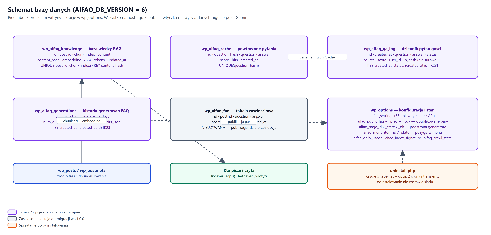

AI FAQ Generator — wejście, wyjście, struktury składowania
Zakres dokumentu. Dokładny opis danych: trasy REST wraz z parametrami i odpowiedziami, schemat tabel, opcje konfiguracyjne, formaty eksportu oraz dane strukturalne dla wyszukiwarek.
Dla kogo. Dla osoby integrującej się z wtyczką, rozszerzającej ją albo diagnozującej ruch sieciowy.
Konwencja. Przestrzeń tras: aifaq/v1. Pełny adres trasy
to /wp-json/aifaq/v1/<ścieżka>. Nazwy tabel podano z przedrostkiem
wp_ — w instalacji obowiązuje przedrostek witryny.
AI FAQ Generator 1.0.0 · schemat bazy w wersji 6 · Licencja GPLv2
Uwierzytelnienie. Trasy administracyjne wymagają ciasteczka sesji
WordPressa oraz znacznika X-WP-Nonce o wartości otrzymanej z
wp_create_nonce('wp_rest'). Trasa POST /ask jest otwarta.
Przestrzeń aifaq/v1, łącznie 15 tras.
Jedna publiczna, czternaście wymagających uprawnień.
| Metoda | Ścieżka | Uprawnienie | Przeznaczenie |
|---|---|---|---|
| POST | /ask | — (otwarta) | pytanie gościa, odpowiedź z treści witryny |
| GET | /admin/status | administracja | stan bazy wiedzy, zużycie dobowe |
| POST | /admin/reindex | administracja | uruchomienie lub wznowienie indeksowania |
| POST | /admin/clear | administracja | wyczyszczenie bazy wiedzy |
| POST | /admin/settings | administracja | zapis ustawień |
| POST | /admin/verify | administracja | sprawdzenie klucza dostawcy |
| GET | /admin/history | administracja | dziennik pytań gości (stronicowany) |
| POST | /admin/history/clear | administracja | wyczyszczenie dziennika |
| POST | /admin/generate-faq | narzędzie (Autor+) | wygenerowanie zestawu par |
| POST | /admin/export | narzędzie (Autor+) | eksport zestawu w pięciu formatach |
| GET | /admin/generations | administracja | lista zapisanych generowań |
| GET | /admin/generations/detail | administracja | pojedyncze generowanie wraz z parami |
| POST | /admin/generations/delete | administracja | usunięcie generowania i danych powiązanych |
| POST | /admin/faq/publish | publikacja (Redaktor) | publikacja zestawu na podstronie |
| POST | /admin/faq/unpublish | publikacja (Redaktor) | zdjęcie zestawu z podstrony |
POST /wp-json/aifaq/v1/ask — jedyna trasa dostępna
bez logowania.
| Pole | Typ | Wymagane | Ograniczenia |
|---|---|---|---|
question | tekst | tak | walidowane po stronie serwera; oczyszczane jak pole wieloliniowe |
POST /wp-json/aifaq/v1/ask
Content-Type: application/json
{ "question": "W jakich godzinach czynne jest przedszkole?" }
| Pole | Typ | Znaczenie |
|---|---|---|
status | tekst | answered — odpowiedź udzielona, refused — odmowa |
answer | tekst | treść odpowiedzi albo komunikat odmowy |
score | liczba | dopasowanie najlepszego fragmentu, zaokrąglone do 4 miejsc (0–1) |
source | tekst | ai — z dostawcy, cache — z pamięci podręcznej |
cached | logiczne | prawda, gdy source to cache |
{
"status": "answered",
"answer": "Przedszkole jest czynne od poniedziałku do piątku w godzinach 7:00–18:00.",
"score": 0.8137,
"source": "cache",
"cached": true
}
{
"status": "refused",
"answer": "Przepraszam, odpowiadam wyłącznie na pytania dotyczące tej strony.",
"score": 0.4120,
"source": "ai",
"cached": false
}
| Stan | Kiedy | Zużywa przydział |
|---|---|---|
answered | dopasowanie powyżej progu twardego | tak, chyba że z pamięci |
refused | dopasowanie poniżej progu twardego | nie |
rate_limited | przekroczony limit pytań gościa | nie |
error | błąd dostawcy lub wyczerpany sufit dobowy | nie |
Przy rate_limited oraz error odpowiedź zawiera pole
message z opisem przyczyny.
POST /wp-json/aifaq/v1/admin/generate-faq —
wymaga uprawnień narzędzia (Autor i wyżej) oraz znacznika X-WP-Nonce.
| Pole | Typ | Wymagane | Uwagi |
|---|---|---|---|
topic | tekst | tak | temat zestawu; walidowany |
extra_desc | tekst | nie | opis uzupełniający, pole wieloliniowe |
POST /wp-json/aifaq/v1/admin/generate-faq
X-WP-Nonce: <znacznik wp_rest>
Content-Type: application/json
{
"topic": "Zapisy dziecka do przedszkola",
"extra_desc": "Pytania rodziców o rekrutację, terminy i wymagane dokumenty."
}
Jednostką wyniku jest para o dwóch polach tekstowych. Ta sama struktura obowiązuje w całym systemie: przy generowaniu, zapisie, eksporcie i publikacji.
| Pole | Typ | Uwagi |
|---|---|---|
question | tekst | niepusty po przycięciu białych znaków |
answer | tekst | niepusty po przycięciu białych znaków |
{
"pairs": [
{ "question": "Od jakiego wieku przyjmujecie dzieci?",
"answer": "Przyjmujemy dzieci w wieku od 2,5 do 6 lat." },
{ "question": "Jakie dokumenty są potrzebne przy zapisie?",
"answer": "Wypełniona karta zgłoszenia oraz numer PESEL dziecka." }
]
}
Przed zapisem pary przechodzą ujednolicenie:
Ten sam kontrakt obowiązuje przy eksporcie. Normalizacja jest wspólna dla generowania i eksportu — nie ma ścieżki, którą para niepełna trafiłaby na wyjście.
Pięć tabel z przedrostkiem witryny. Wersja schematu: 6. Migracja uruchamiana automatycznie po podniesieniu wersji wtyczki.
Diagram powiązań znajduje się na następnej stronie w układzie poziomym.
wp_aifaq_knowledge — baza wiedzy| Kolumna | Typ | Znaczenie |
|---|---|---|
id | bigint unsigned, auto | klucz główny |
post_id | bigint unsigned | wpis źródłowy |
chunk_index | liczba | numer fragmentu w obrębie wpisu |
content | longtext | treść fragmentu |
content_hash | char(64) | suma kontrolna — podstawa pomijania niezmienionych |
embedding | longtext | wektor fragmentu |
updated_at | datetime | czas ostatniej aktualizacji |
wp_aifaq_qa_log — dziennik pytań| Kolumna | Typ | Znaczenie |
|---|---|---|
id | bigint unsigned, auto | klucz główny |
created_at | datetime | czas zadania pytania |
question | text | treść pytania |
answer | longtext | udzielona odpowiedź lub komunikat odmowy |
status | varchar(20) | answered / refused |
source | varchar(20) | ai / cache |
score | float | dopasowanie najlepszego fragmentu |
user_id | bigint unsigned | 0 dla gościa niezalogowanego |
wp_aifaq_generations — historia generowań| Kolumna | Typ | Znaczenie |
|---|---|---|
id | bigint unsigned, auto | klucz główny |
created_at | datetime | czas wygenerowania |
topic | text | temat podany na wejściu |
extra_desc | longtext | opis uzupełniający |
language | varchar(10) | język zestawu, domyślnie pl |
user_id | bigint unsigned | autor generowania |
pairs_json | longtext | pary w postaci ustrukturyzowanej |
| Tabela | Rola |
|---|---|
wp_aifaq_cache | pamięć podręczna odpowiedzi — klucz pytania i treść odpowiedzi |
wp_aifaq_faq | zestaw aktualnie opublikowany na podstronie publicznej |

schematy/03-baza-danych.drawioPrzechowywane w tabeli opcji WordPressa, wszystkie z przedrostkiem
aifaq_. Usuwane w całości przy deinstalacji.
| Klucz | Zawartość |
|---|---|
aifaq_settings | komplet ustawień wtyczki (m.in. klucz dostawcy, model, język, adres podstrony, progi, limity) |
aifaq_public_faq | zestaw aktualnie opublikowany |
aifaq_public_faq_prev | zestaw poprzedni — umożliwia powrót po publikacji |
aifaq_page_id | identyfikator podstrony publicznej |
aifaq_page_state | stan podstrony (utworzona, adres, zgodność) |
aifaq_page_bootstrapped | znacznik pierwszego utworzenia podstrony |
aifaq_menu_item_id | identyfikator pozycji w menu witryny |
aifaq_menu_state | stan pozycji w menu |
aifaq_crawl_state | stan kolejki pobierania wyrenderowanych stron |
aifaq_site_profile | rozpoznany profil witryny |
aifaq_loopback | wynik sprawdzenia połączenia zwrotnego do własnej witryny |
aifaq_index_signature | sygnatura indeksu: dostawca, model, wymiar wektora, wersja źródeł |
aifaq_daily_usage | licznik zużycia dobowego: data oraz liczba zapytań |
aifaq_db_version | wersja schematu bazy (obecnie 6) |
Sygnatura indeksu. Zmiana dostawcy, modelu embeddingów albo wymiaru wektora unieważnia dotychczasową bazę wiedzy — wektory z różnych modeli nie są porównywalne. System wykrywa to po niezgodności sygnatury i wymusza przebudowę.
POST /admin/export zwraca zestaw w pięciu postaciach
jednocześnie. Odbiorca wybiera tę, której potrzebuje.
| Klucz | Postać | Zastosowanie |
|---|---|---|
html | gotowy fragment HTML | wklejenie w dowolną stronę |
gutenberg | bloki edytora WordPressa | wklejenie do wpisu w edytorze blokowym |
elementor | struktura zakładek budowniczego stron | wklejenie do sekcji Elementora |
json | pary w postaci ustrukturyzowanej | integracja z systemem zewnętrznym |
jsonld | dane strukturalne FAQPage | oznaczenie treści dla wyszukiwarek |
Wspólna normalizacja. Wszystkie pięć postaci powstaje z tego samego, uprzednio ujednoliconego zbioru par — treść między formatami nie może się rozjechać.
Podstrona publiczna zawiera dane strukturalne typu FAQPage zgodne ze Schema.org, zbudowane z aktualnie opublikowanych par.
<script type="application/ld+json">
{
"@context": "https://schema.org",
"@type": "FAQPage",
"mainEntity": [
{
"@type": "Question",
"name": "W jakich godzinach czynne jest przedszkole?",
"acceptedAnswer": {
"@type": "Answer",
"text": "Przedszkole jest czynne od poniedziałku do piątku w godzinach 7:00–18:00."
}
}
]
}
</script>
| Warunek | Zachowanie |
|---|---|
| Brak opublikowanych par | dane strukturalne nie są wypisywane |
| Zestaw opublikowany | każda para staje się pozycją Question |
| Strona inna niż podstrona generatora | dane nie są dokładane |
Niezależnie od FAQPage sama podstrona opisana jest jako aplikacja internetowa — oba oznaczenia pełnią różne role i nie kolidują ze sobą.
| Kod HTTP | Sytuacja | Co zrobić |
|---|---|---|
200 | żądanie obsłużone — także odmowa tematyczna | sprawdzić pole status w treści odpowiedzi |
401 / 403 | brak uprawnień albo nieważny znacznik X-WP-Nonce |
odświeżyć stronę kokpitu — znacznik wygasa (typowo po nocy) |
400 | parametr nie przeszedł walidacji | sprawdzić wymagane pola trasy w rozdziałach S2 i S3 |
409 | konflikt publikacji — równoległa zmiana | odświeżyć i sprawdzić, który zestaw jest opublikowany |
429 | przekroczony limit pytań gościa | odczekać okno limitu albo podnieść próg w ustawieniach |
5xx | błąd dostawcy lub środowiska | sprawdzić klucz, wybrany model i ruch wychodzący HTTPS |
Wyczerpanie przydziału dobowego zwracane jest jako błąd wraz z sugerowanym czasem ponowienia liczonym w sekundach. Wartość ta jest myląca — przydział dobowy odnawia się dopiero następnego dnia.